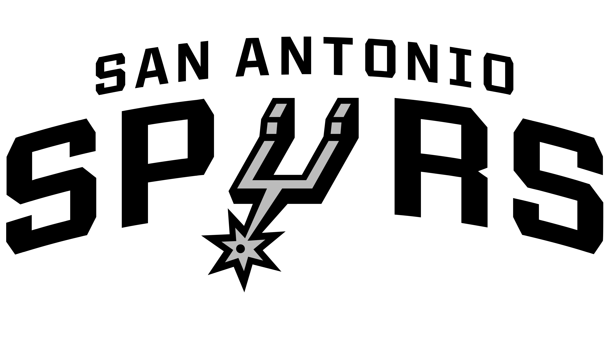

San Antonio Spurs
NBA의 프로농구팀. 서부 컨퍼런스 사우스웨스트 디비전 소속. 연고지는 샌안토니오. 팀명인 스퍼스는 '박차'를 뜻하며 박차를 가해 열심히 달리자는 뜻이다. 토트넘 핫스퍼의 별칭도 '스퍼스'이다.

본래 ABA에 있었던 팀으로 1976년 ABA가 NBA에게 합병됐을 때 뉴저지 네츠, 인디애나 페이서스, 덴버 너기츠와 함께 NBA로 넘어왔다. 1990년부터 2017년까지 28년 동안 27회 플레이 오프에 진출했고
5번의 우승을 기록한 서부 지구 전통의 강팀이자 최강의 스몰 마켓 팀. ABA까지 합쳐도 플레이오프에 못 나간게 딱 5시즌이다. (ABA 1시즌, NBA 4시즌) 해당 시즌은 댈러스 채퍼럴스(1972-73),
샌안토니오 스퍼스(1983-84, 1986-87, 1988-89, 1996-97)
국내 한정 별명은 산왕. 구분을 위해 샌왕으로 부르기도 한다. 슬램덩크 산왕 팀처럼 흰색-검정색의 유니폼 컬러를 갖고 있다. 2000년대 들어 막강한 전력으로 서부 지구의 끝판왕 이미지를 구축하기도 했고,
흔히 샌안토니오를 샌안으로 줄여서 부르는데 이조차도 산왕과 어감이 비슷하다